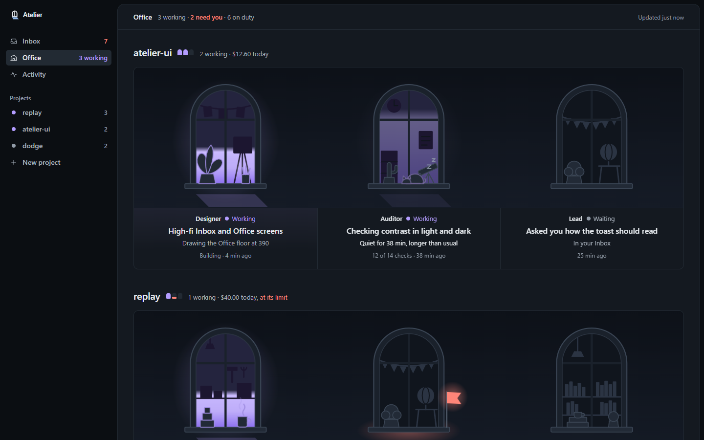
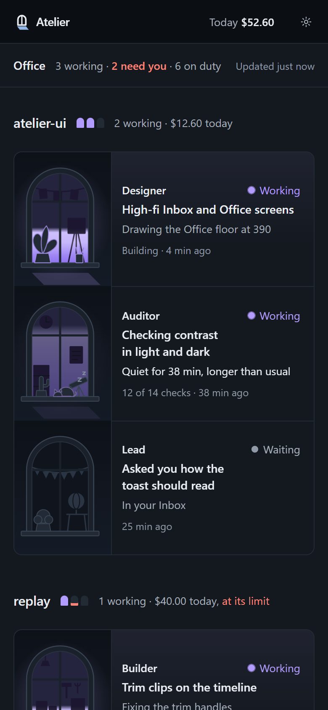
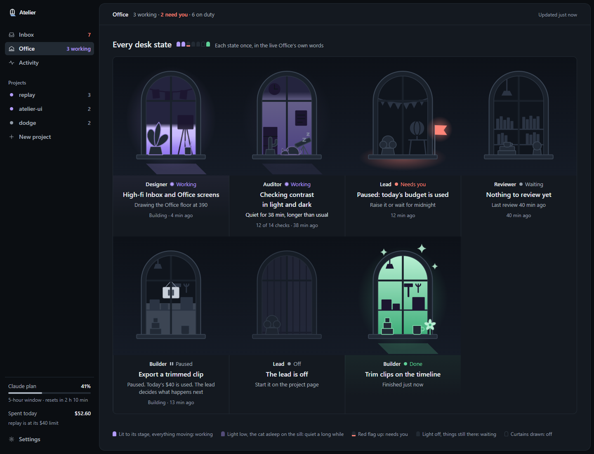
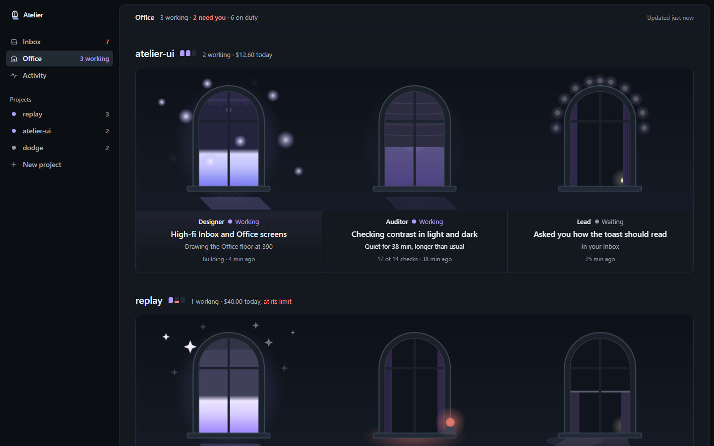
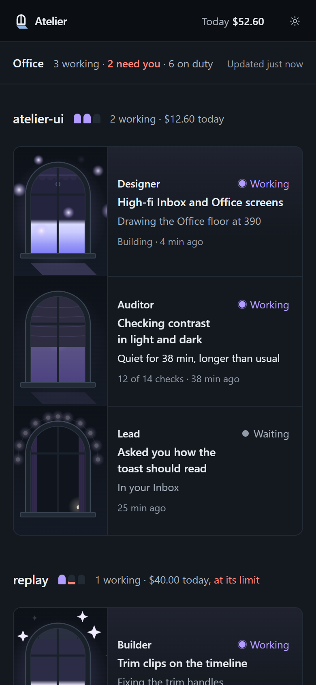
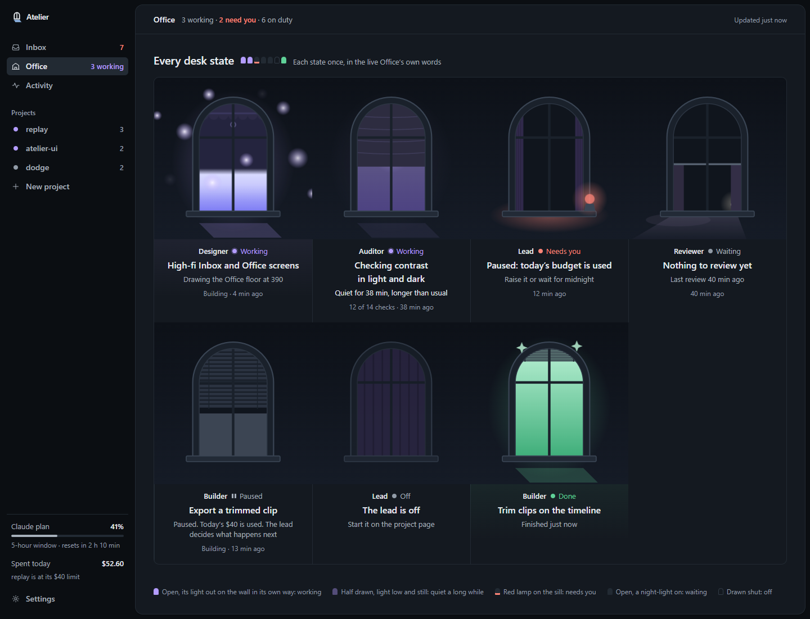
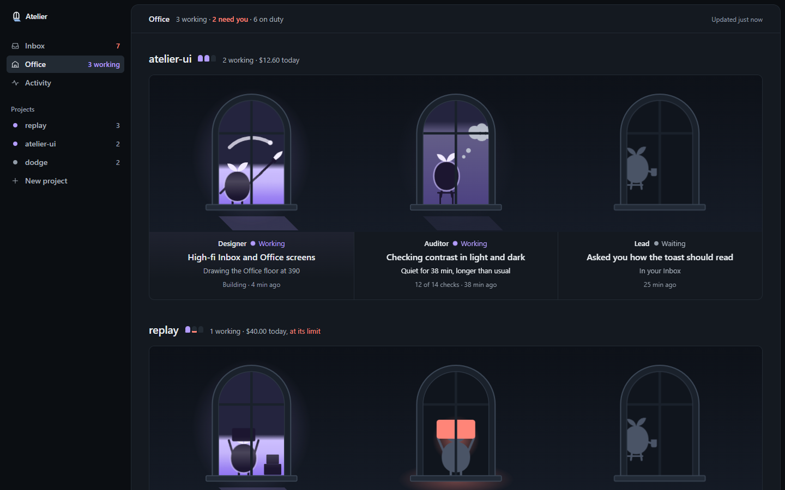
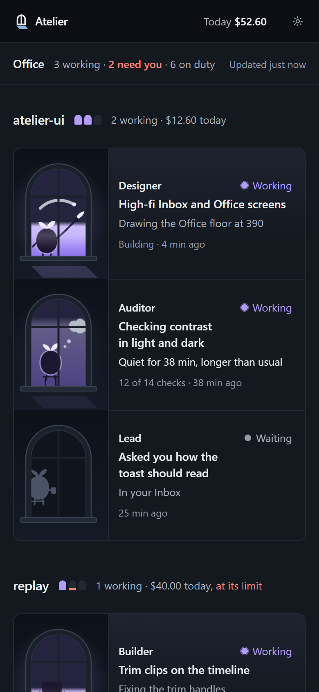
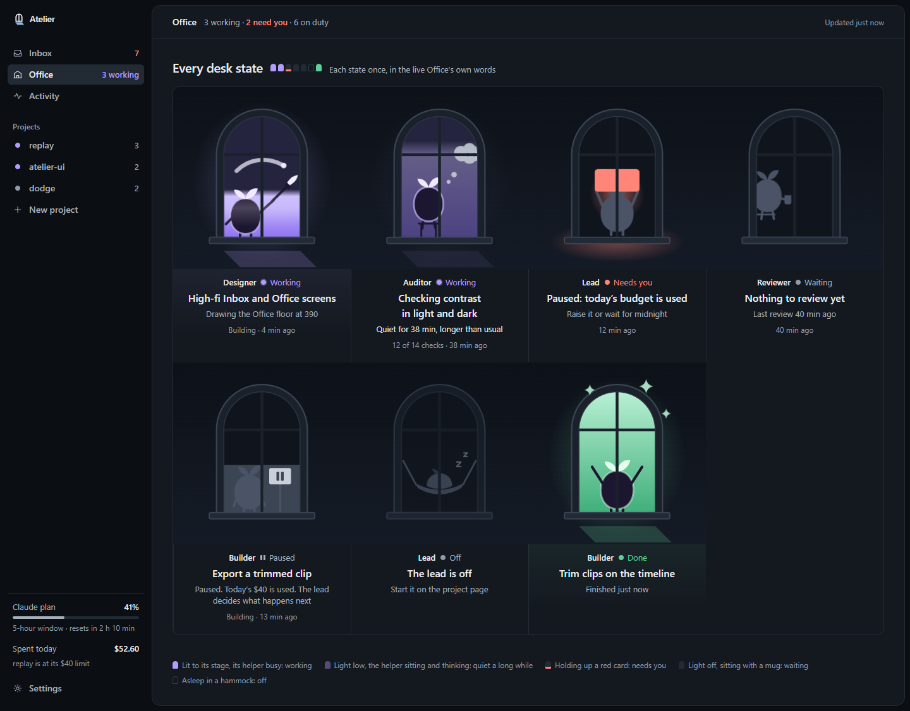

P1 · what lives in and on the window
Lived-in
Feel: you know who works behind each window by what they keep there, like a street where nobody is shown. The designer has sketches pegged on a line and a big-leaf plant, the builder shelves of boxes, the reviewer books and a mug, the auditor a clock and a telescope, the lead bunting and a globe. While it works, steam rises and leaves sway. When it needs you, a red flag goes up. When it finishes, a flower opens.
To build: medium. Five role rooms as inline SVG plus a few shared props (cat, flag, card, curtains), switched by CSS from the state the Office already has.



Open it live, with the demoEvery stateLight modeReduced motionWatch the 16 s recordingOn a phoneFrame by frame

P2 · a temperament in the light itself
Temperament
Feel: nobody and nothing inside: each window’s light has its own personality and throws it onto the wall. The designer’s light lets orbs float up, the builder’s pops sparks on a quick double beat, the reviewer’s spills a reading-lamp pool, the auditor’s sweeps a lighthouse beam, the lead’s strings fairy lights round the arch. Blinds and curtains tell the state: half drawn when quiet, one tug and a red lamp when it needs you, drawn shut after a flicker when off.
To build: medium. One SVG window per desk with a role dressing and a wall layer; the wall shows are a few CSS loops each.



Open it live, with the demoEvery stateLight modeReduced motionWatch the 16 s recordingOn a phoneFrame by frame

P3 · a small cheerful presence inside
Little lights
Feel: in every window lives the same kind of small, round, faceless helper with a leaf sprout, so no one is anyone in particular, and it is always upbeat. Working, it is busy with its role’s thing: painting a stroke on the glass, carrying a block to a pile, reading on a stack of books, peering through a magnifier, conducting. Quiet a long while, it sits and thinks. It holds up a red card when it needs you, sits with a mug while it waits, naps in a hammock when off, and jumps for joy when it finishes.
To build: light to medium. One helper drawing with seven poses and five role props, all inline SVG; poses cross-fade, so there is no animation rig.



Open it live, with the demoEvery stateLight modeReduced motionWatch the 16 s recordingOn a phoneFrame by frame

My pick: P3 Little lights
It gives the windows the most obvious, likeable character: you read each state from what the little helper is doing (painting, thinking, holding up a red card, napping) before you read a word, and it is never slumped or gloomy. All the helpers are the same kind, so it stays anonymous, while the window, its light by stage and the red sill glow stay exactly as in D-B. P1 Lived-in is a close second if you would rather have rooms full of things than someone in them, and P2 is the calmest of the three but says the least about each state in a still.